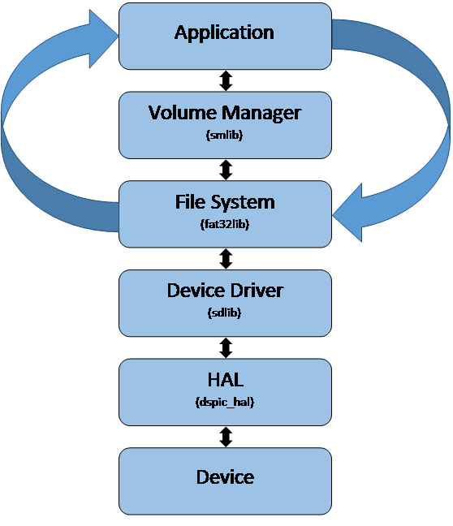

|
||
|
|
|
||
|
| Fat32lib is a portable FAT12/16/32 file system stack for embedded devices. All components, except for the Hardware Abstraction Layer (HAL) are written in portable ANSI C89 code to any platform with a C89 compiler. It is intended for embedded devices where memory and processing power are scarce resources. It has all the features you will find on libraries designed for large devices (including asynchronous/non-blocking IO, unbuffered/buffered IO, drive management, and more.) It requires less than 2 KBs of memory to run (with long filenames disabled) and it’s optimized for flash devices. The included SD Card driver accesses an SD Card device through the SPI interface and can use the WRITE_MULTIPLE_BLOCKS command of the SD Card to write large amounts of data from buffers as small as 512 bytes. The entire stack, including the SD Card driver, is designed to be portable. Only the HAL library (which consists mostly of macros for accessing the SPI and DMA modules) needs to be re-written for the target platform. It can even be ported to devices without an SPI or DMA module by implementing this functionality in software. Below is a diagram of all the layers in the stack and below it is a description of each layer. All the layers in are interchangeable (you can even add 3rd party file systems provided you implement the interface required by smlib) and the Volume Manager (smlib) layer is optional and can be excluded to save space. You can also exclude any features not required by your application at compile-time to save space. |
|  |
| Application |
| Your application communicates with the file system through the Volume Manager library or, optionally, through the File System library. |
| Volume Manager (smlib) |
| The Volume Manager unifies several file system libraries and volumes. Its API is almost identically to the one of the file system library except that since it manages volumes for you you don’t need to provide a volume handle to each function. Drives are mounted using a drive letter or label and the Volume Manager decides which file system or volume should handle the request based on the path. It can also be configured to monitor a removable device and mount the volume automatically when the device is inserted and it provides notification of such events to your application via callback functions. Additionally, it can be configured at compile-time to support file locks. When this feature is enabled a file can be opened an unlimited number of times for read access but only once for write access. The API for the volume manager is declared in the sm.h header file. |
| File System (fat32lib) |
| The File System library is the core of the stack, it handles all IO functions. It supports FAT12, FAT16, and FAT32 volumes. Its features include multiple concurrent asynchronous (non-blocking) IO requests, unbuffered as well as buffered IO (though the SD driver requires a 512 bytes DMA buffer for asynchronous IO), stream functions for writing continuously to the device, multi-threading support, and more. |
| Device Driver (sdlib) |
| The driver handles low-level communication with the device. The library comes with a portable SD Card driver but you can develop drivers for any IO device. A driver can be as simple as a write_sector, read_sector, and get_sector_count/size functions for the basic read write functionality. More advanced features require more complex drivers. The included SD Card driver is designed to be portable. It uses the HAL library to access device-specific features such as SPI module, DMA, and IO ports. |
| Hardware Abstraction Layer (dspic_hal) |
| The Hardware Abstraction Layer (HAL) provides access to device specific features such as SPI and DMA modules, and IO ports. It is the only component that needs to be written specifically for target platform. It consists mostly of macros for accessing the device-specific modules. |
| Device |
| This is the physical IO device. It can be any storage device as long as proper drivers are developed. |